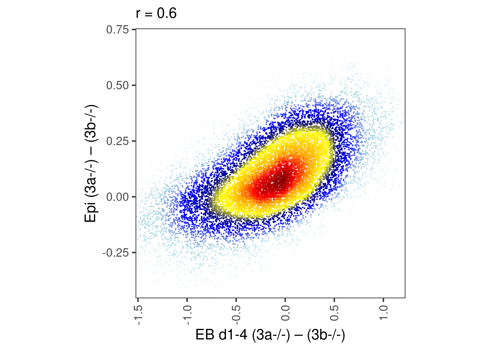
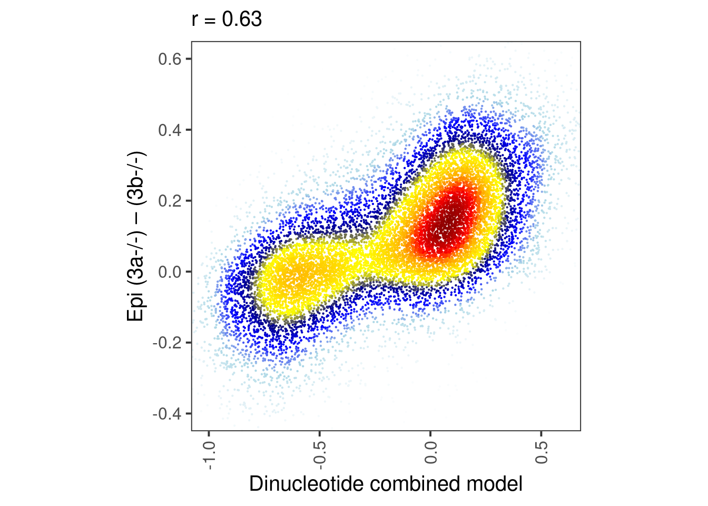
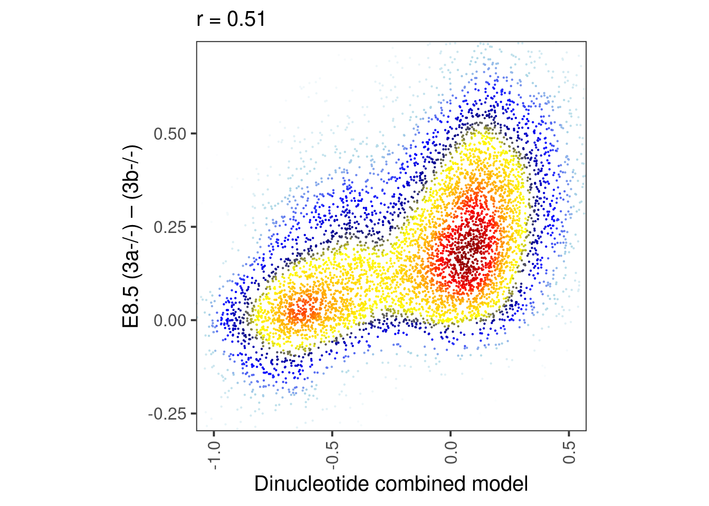

4 Validation from external data
4.0.2 Get A/B meth data
4.0.3 Get Meissner data
md <- tribble(~track_name, ~sort, ~num,
"Meissner_Nature_2017.Epi_Dnmt3a_1", "ko3a", 1,
"Meissner_Nature_2017.Epi_Dnmt3a_2", "ko3a", 2,
"Meissner_Nature_2017.Epi_Dnmt3a_4", "ko3a", 4,
"Meissner_Nature_2017.Epi_Dnmt3a_5", "ko3a", 5,
"Meissner_Nature_2017.Epi_Dnmt3a_6", "ko3a", 6,
"Meissner_Nature_2017.Epi_Dnmt3b_1", "ko3b", 1,
"Meissner_Nature_2017.Epi_Dnmt3b_2", "ko3b", 2,
"Meissner_Nature_2017.Epi_Dnmt3b_3", "ko3b", 3,
"Meissner_Nature_2017.Epi_Dnmt3b_4", "ko3b", 4,
"Meissner_Nature_2017.Epi_Dnmt3b_5", "ko3b", 5,
"Meissner_Nature_2017.Epi_Dnmt3b_6", "ko3b", 6,
"Meissner_Nature_2017.Epi_WT_4", "wt", 4,
"Meissner_Nature_2017.Epi_WT_5", "wt", 5,
"Meissner_Nature_2017.Epi_WT_6", "wt", 6,
"Meissner_Nature_2017.Epi_WT_7", "wt", 7) %>%
mutate(name = paste0(sort, "_", num))
m_all_epi6 <- gextract_meth(tracks = md$track_name, names=md$name, intervals=m %>% select(chrom, start, end), extract_meth_calls = TRUE, iterator = m %>% select(chrom, start, end)) %cache_df% here("output/meissner_epi_cpg_meth.tsv") %>% as_tibble() min_cov <- 10
m_epi6 <- m_all_epi6 %>% select(chrom, start, end)
for (g in unique(md$sort)){
nms <- md %>% filter(sort == g) %>% pull(name)
cov_col <- paste0(g, ".cov")
meth_col <- paste0(g, ".meth")
m_epi6[[cov_col]] <- rowSums(m_all_epi6[, paste0(nms, ".cov")], na.rm=TRUE)
m_epi6[[meth_col]] <- rowSums(m_all_epi6[, paste0(nms, ".meth")], na.rm=TRUE)
m_epi6[[g]] <- ifelse(m_epi6[[cov_col]] >= min_cov, m_epi6[[meth_col]] / m_epi6[[cov_col]], NA)
}
m_epi6 <- m_epi6 %>% select(-ends_with(".meth"), -ends_with(".cov")) %cache_df% here("output/meissner_epi_cpg_meth_sum.tsv")df <- m_epi6 %>% mutate(dAB_epi6 = ko3a - ko3b) %>% filter(!is.na(dAB_epi6)) %>% select(chrom, start, end, dAB_epi6) %>% inner_join(m) %>% filter(!is.na(dAB))## Joining, by = c("chrom", "start", "end")## [1] 13388 64.0.4 Figure 4H
bandwidth <- 0.06
point_size = 0.1
p_epi6_meth <- df %>%
select(dAB, dAB_epi6) %>%
mutate(col = densCols(., bandwidth=bandwidth,colramp=colorRampPalette(c("white","lightblue", "blue", "darkblue", "yellow", "gold","orange","red", "darkred" )))) %>%
ggplot(aes(x=dAB, y=dAB_epi6, col=col)) +
geom_point(shape=19, size=point_size) +
scale_color_identity() +
coord_cartesian(xlim = c(-1.4, 1.1), ylim = c(-0.4, 0.7)) +
xlab("EB d1-4 (3a-/-) – (3b-/-)") +
ylab("Epi (3a-/-) – (3b-/-)") +
theme(aspect.ratio=1, panel.grid.major=element_blank(), panel.grid.minor=element_blank()) +
labs(subtitle = glue("r = {cor}", cor = round(cor(df$dAB_epi6, df$dAB), digits=2)))
p_epi6_meth
p_epi6_score <- df %>%
select(score, dAB_epi6) %>%
mutate(col = densCols(., bandwidth=bandwidth,colramp=colorRampPalette(c("white","lightblue", "blue", "darkblue", "yellow", "gold","orange","red", "darkred" )))) %>%
ggplot(aes(x=score, y=dAB_epi6, col=col)) +
geom_point(shape=19, size=point_size) +
scale_color_identity() +
coord_cartesian(xlim = c(-1, 0.6), ylim = c(-0.4, 0.6)) +
xlab("Dinucleotide combined model") +
ylab("Epi (3a-/-) – (3b-/-)") +
theme(aspect.ratio=1, panel.grid.major=element_blank(), panel.grid.minor=element_blank()) +
labs(subtitle = glue("r = {cor}", cor = round(cor(df$dAB_epi6, df$score), digits=2)))
round(cor(df$dAB_epi6, df$score), digits=2)## [1] 0.63
4.0.5 Figure 4I
bandwidth <- 0.06
point_size = 0.1
p_e8.5_meth <- df_weber %>%
select(dAB, dAB_e8.5) %>%
mutate(col = densCols(., bandwidth=bandwidth,colramp=colorRampPalette(c("white","lightblue", "blue", "darkblue", "yellow", "gold","orange","red", "darkred" )))) %>%
ggplot(aes(x=dAB, y=dAB_e8.5, col=col)) +
geom_point(shape=19, size=point_size) +
scale_color_identity() +
coord_cartesian(xlim = c(-1.4, 1.1), ylim = c(-0.4, 0.7)) +
xlab("EB d1-4 (3a-/-) – (3b-/-)") +
ylab("E8.5 (3a-/-) – (3b-/-)") +
theme(aspect.ratio=1, panel.grid.major=element_blank(), panel.grid.minor=element_blank()) +
labs(subtitle = glue("r = {cor}", cor = round(cor(df_weber$dAB_e8.5, df_weber$dAB), digits=2)))
p_e8.5_meth
p_e8.5_score <- df_weber %>%
select(score, dAB_e8.5) %>%
mutate(col = densCols(., bandwidth=bandwidth,colramp=colorRampPalette(c("white","lightblue", "blue", "darkblue", "yellow", "gold","orange","red", "darkred" )))) %>%
ggplot(aes(x=score, y=dAB_e8.5, col=col)) +
geom_point(shape=19, size=point_size) +
scale_color_identity() +
coord_cartesian(xlim = c(-1, 0.5), ylim = c(-0.25, 0.7)) +
xlab("Dinucleotide combined model") +
ylab("E8.5 (3a-/-) – (3b-/-)") +
theme(aspect.ratio=1, panel.grid.major=element_blank(), panel.grid.minor=element_blank()) +
labs(subtitle = glue("r = {cor}", cor = round(cor(df_weber$dAB_e8.5, df_weber$score), digits=2)))
p_e8.5_score